Сборка port-art2, 10.09.2026. Слева на каждой паре - макет Ани, справа - живой экран игры, снятый сегодня. Всё, что видно справа, кроме текста, это её файлы.
Картинок в игре 428. Её и наших 361, из исходной игры 67.
Отдельных файлов внутри сборки (атласы, звук): наших 10 из 84. Один файл это пачка картинок, поэтому доли по файлам и по картинкам разные.
Осталось дорисовать: 8 кадров интерфейса, 23 кадров окон и рангов, полоса загрузки со спиннером и 21 звук.
Девять экранов игры. В каждой ячейке слева макет Ани, справа наш экран. Четыре последних мы ещё не сняли: чтобы они открылись, надо доиграть уровень или потратить подсказки.
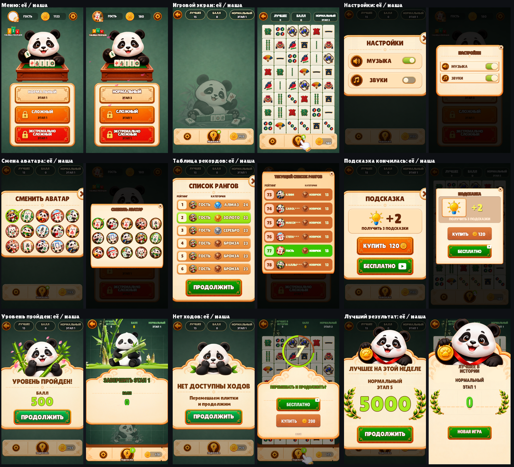
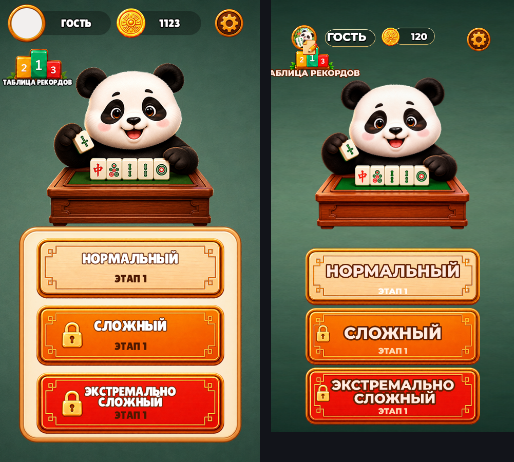
слева макет Ани, справа игра
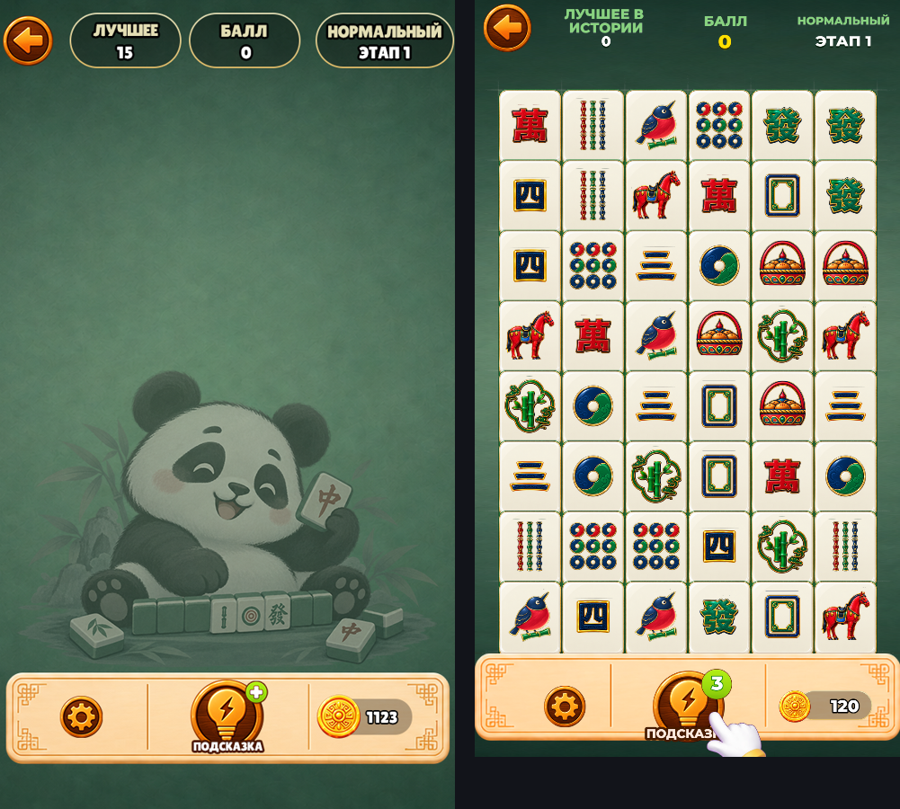
слева макет Ани, справа игра
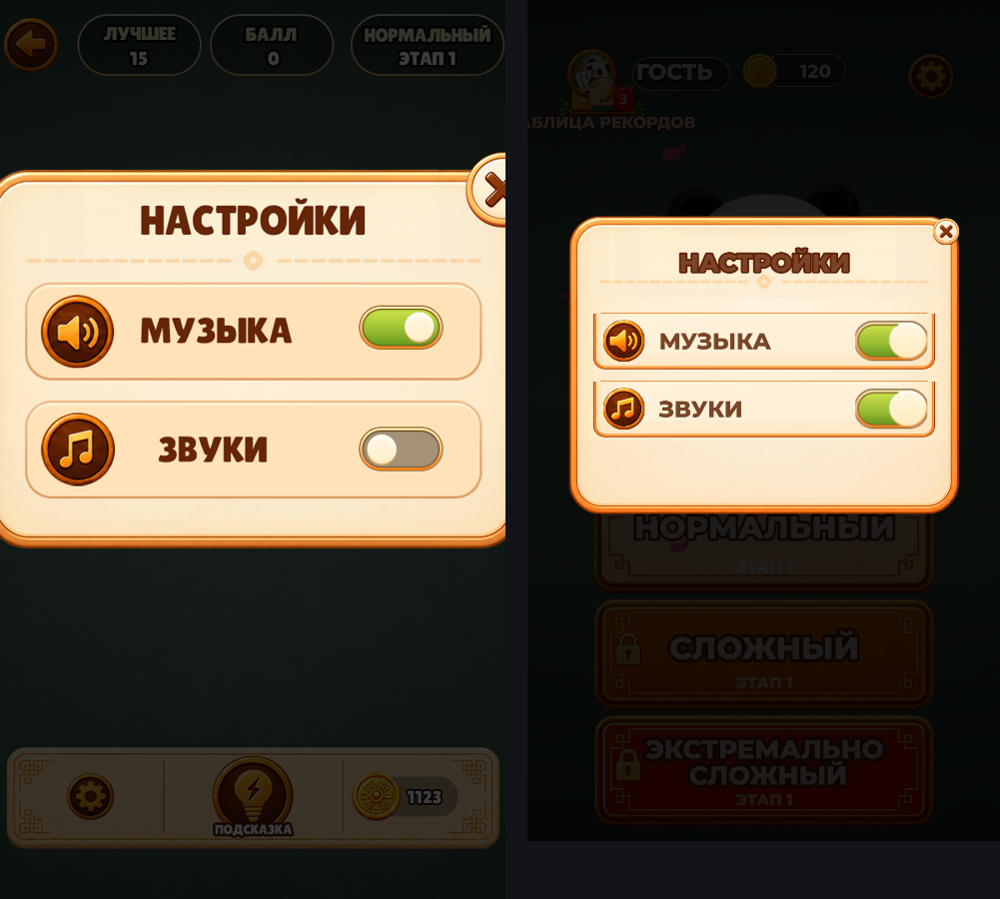
слева макет Ани, справа игра
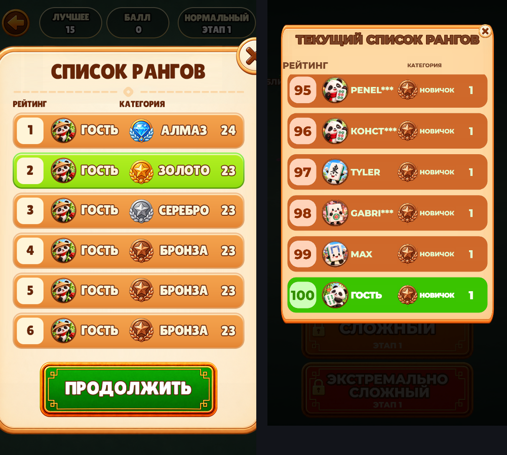
слева макет Ани, справа игра
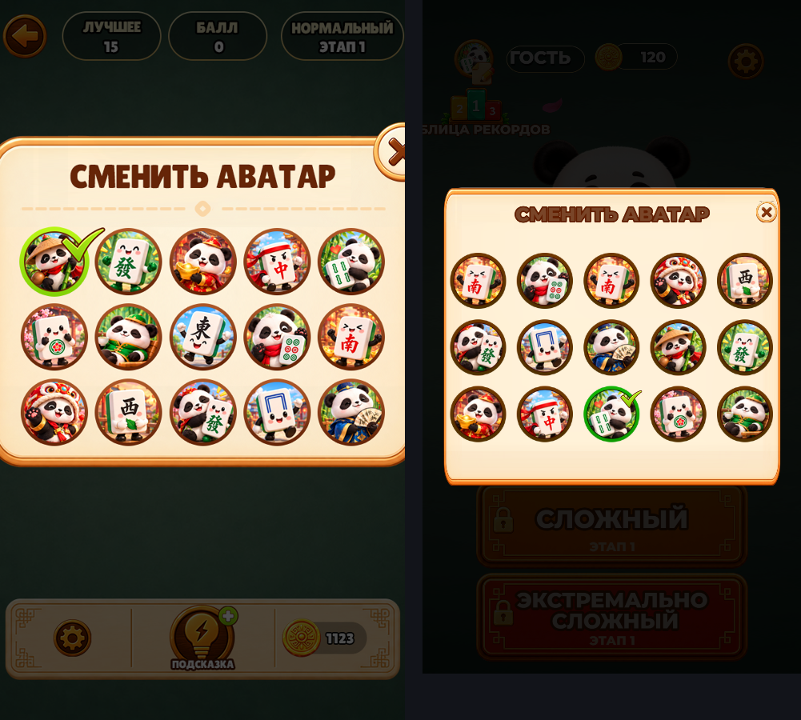
слева макет Ани, справа игра
Эти окна в игре есть, но чтобы их снять, надо доиграть уровень до конца или потратить подсказки. Пока показываю только макеты Ани, чтобы было видно, что нас ждёт. Панель окна и крестик там уже её, как и в остальных окнах; звёзды и панда над рамкой - нет.
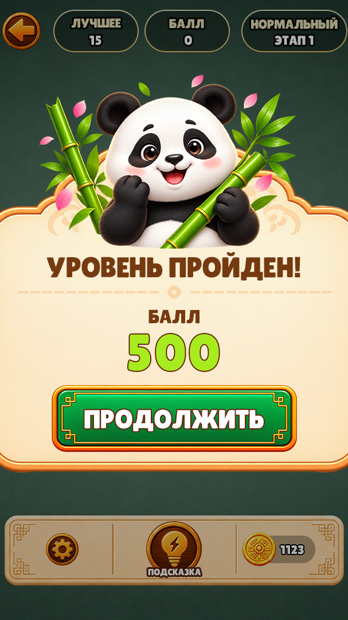
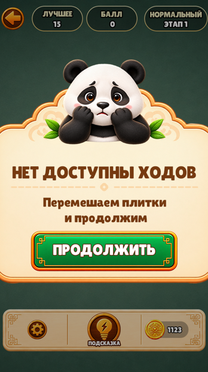
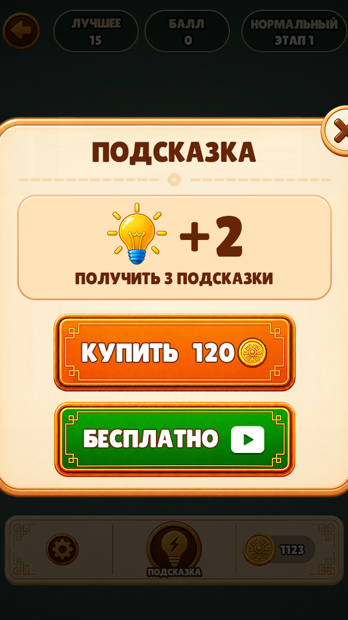
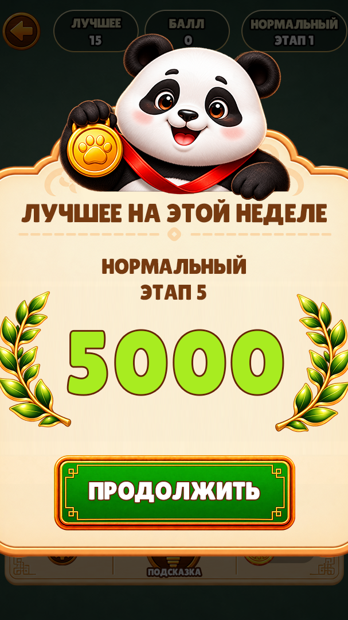
8 картинок. Это те кадры, где до сих пор пиксели исходной игры и которые видно. Кадры выключенных экранов (выбор темы, шапка окна) сюда не попали - их рисовать не надо.
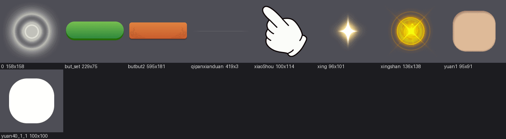
23 картинок. В основном это тянущиеся подложки строк и полосы прогресса: у них движок растягивает середину, поэтому рисовать надо так, чтобы узор был только по краям.
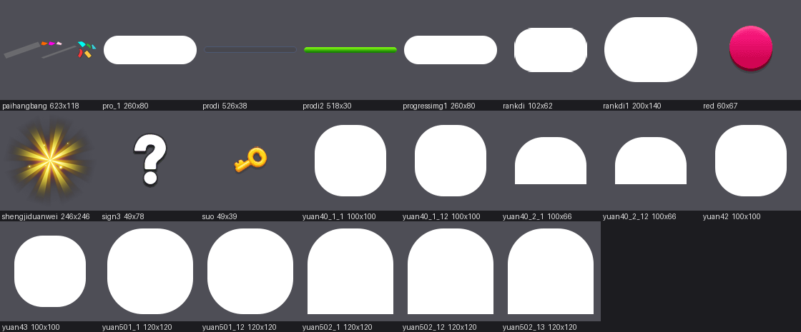
Пробовали, вот что вышло. Сверху плашка под надписи: её у нас не было, и она собрана по цветам, снятым пипеткой прямо с её макета - заливка rgb(27, 48, 38), контур rgb(227, 205, 143). От её собственной не отличается. Снизу строка таблицы рекордов, вырезанная из макета буквально: её цифра «23» стоит вплотную к скруглённому торцу, кусок цифр попал в край, а зеркальная вторая половина его удвоила. Эти вырезы удалены и в игру не попали.
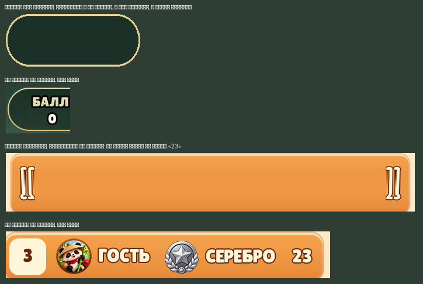
И главное, что выяснилось попутно: подложки строк в рекордах и подложка полосы прогресса в атласе игры белые. Оранжевый цвет строк и зелёный у строки игрока делает сама игра, крася белую плашку на ходу. Значит цвет там уже задан кодом, и вкладывать туда цветной рисунок нельзя - он подерётся с покраской. Правило на будущее: прежде чем резать, смотрим кадр в атласе. Белая плашка означает, что от художника нужен силуэт, а не цвет.
| Элемент | Где | Как рисовать |
|---|---|---|
| Плашка под надписи | игровой экран | тёмная плашка со светлым контуром, пустая, без текста |
| Звёзды | экран победы | маленькая 96x101 и большая с сиянием 136x138 |
| Отрезок линии | игровой экран | 419x3, из него собирается сетка доски и линия соединения пар |
| Рука-указатель | обучение | 100x114 |
| Подложка строки | таблица рекордов | растягивается, узор только по краям |
| Полосы прогресса | ранги | дорожка и заполнение, тоже растягиваются |
Подробный лист с точными размерами и картинками - на отдельной странице.
Единственное на экране, что не её рисунок, - это буквы. Текст в игре не картинка: движок рисует его вживую из файла шрифта, потому что языков три, а числа меняются. На её макетах буквы нарисованы внутри картинки, достать оттуда шрифт нельзя. Подобран ближайший настоящий: Montserrat ExtraBold, заглавными, как у неё.
Страница для команды. Внутри есть картинки исходной игры - они показаны затем, чтобы было видно, что предстоит заменить. Поисковикам страница закрыта.